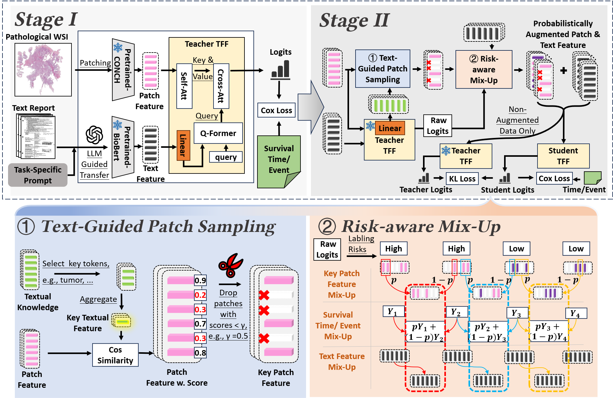

I am currently a Ph.D student (since 2022) at spAtial Sensing and Computing Lab (ASC) in Xiamen University
supervised by Prof. Cheng Wang. My interests focus on Federated Learning and LiDAR Localization.
Recent News
[2025.06] One paper got accepted by MICCAI.
[2025.02] One paper got accepted by CVPR.
[2025.01] One paper got accepted by WWW.
[2024.05] One papers got accepted by KDD.
[2024.04] One paper got accepted by IJCAI.
[2023.07] One paper got accepted by FL-IJCAI.
[2022.11] One paper got accepted by AAAI.
[2021.04] One paper got accepted by IJCAI.
Publications
* denotes equal contribution.

Enhancing WSI-Based Survival Analysis with Report-Auxiliary Self-Distillation
Zheng Wang, Hong Liu,Zheng Wangstrong>, Danyi Li, Min Cen,Baptiste Magnier,Li Liang,Liansheng Wang